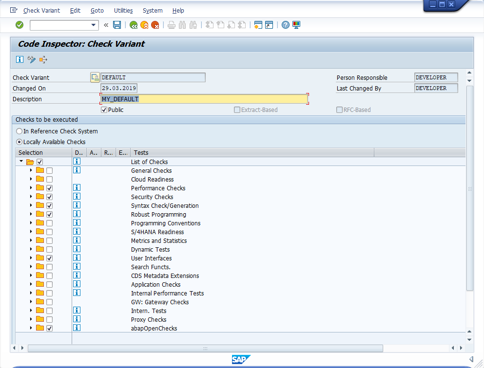
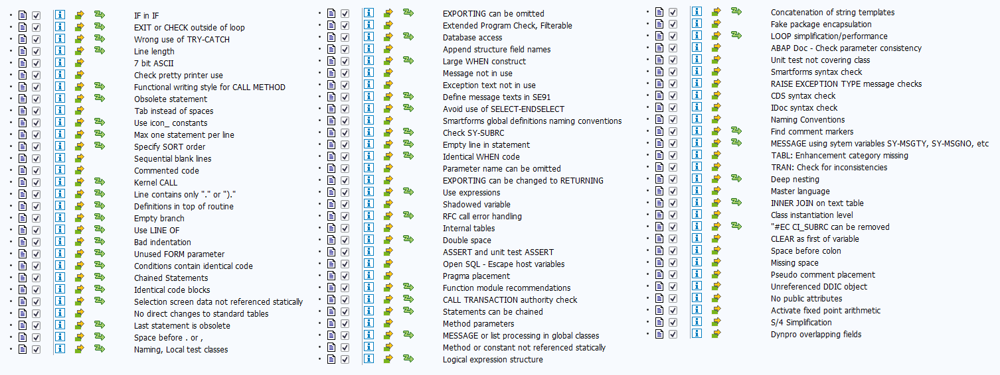
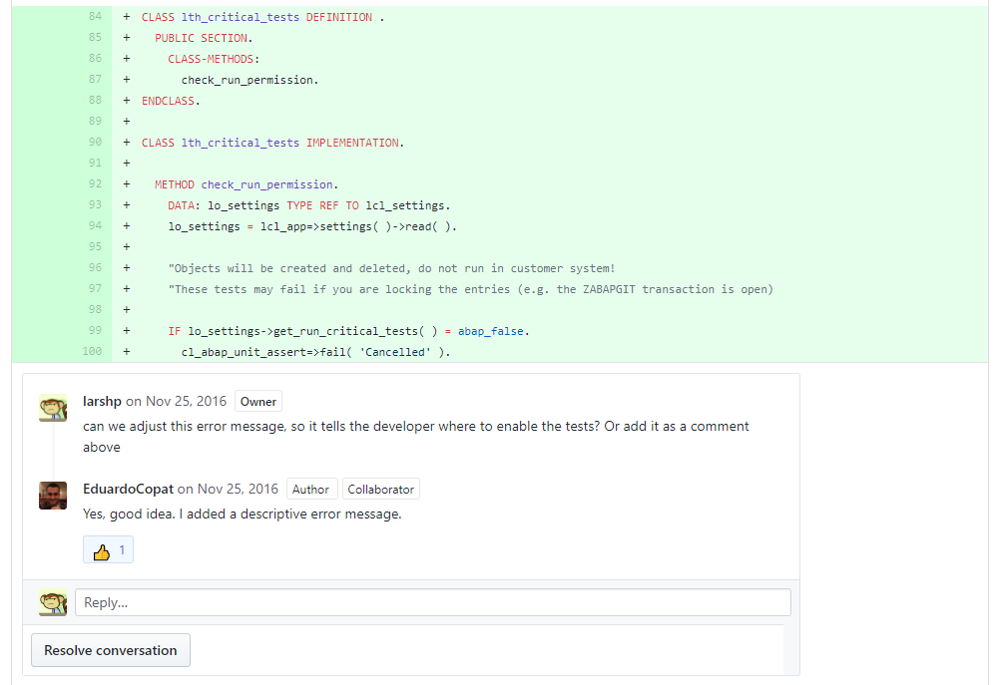
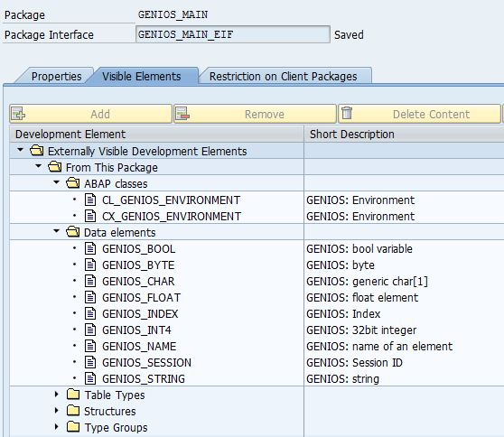
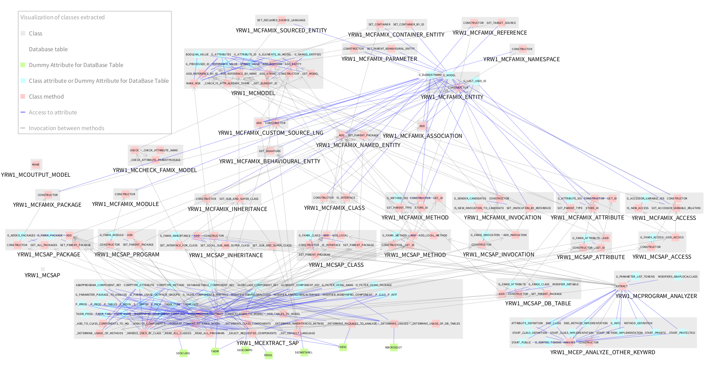
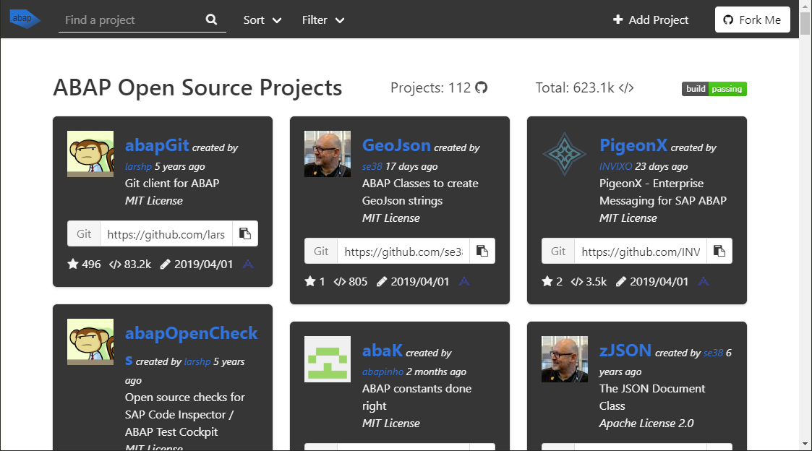

ABAP monoliths are bad
SAP Inside Track, Copenhagen, 2019| @LarsHvam | ||
| larshp | ||
 | ||
Disclaimer

Open source
Test in sandbox
ABAP monoliths are bad
mkay?


Transparency
- What changed in the dev system since yesterday?
- How did the message class look yesterday?
| started ~5 years ago | |
| ~3400 commits | |
| 66 contributors | |
| ~70000 lines | |
| 7.02 and up | |
| MIT License |
abapGit Design Goals
- Easy installation
- Easy upgrade
- Small system footprint
- Code readable in git repository
abapGit works with

| |
 Team Services
|

|
|
|

|
Quality
Static Analysis - SCI
abapOpenChecks
abaplint
- Open Source
- Static analysis of ABAP code
- Written in TypeScript
- Runs on files serialized by abapGit
playground.abaplint.org


GitHub App
GitHub Actions
GitLab Pipelines
Bitbucket Pipelines
Azure Pipelines
Prepare for the future
- Unicode
- ERP on HANA
- S/4
- #ABAPinSAPCP
Manual Code Reviews
ABAP Code Reviews with abapGit
Maintainability
- Clean <> Empty, but Empty = Clean
- Write unit tests
- Be aware of dependencies
- Reduce dependencies
- Processes
- Easy rollback
- Reducing risk
Package Checks
ABAP Package Concept Part 1 - Tobias TrappFake Package Encapsulation - abapOpenChecks 

{kind=link}
Use CTS for deployment
- Auditable (<> git)
- Reliable
- Cherry picking (gCTS?)
- Optimized import
- Performance
- Downtime
|
Enterprise Messaging for ABAP Open Source Work in progress Easily consume OpenAPI from ABAP http://pigeonx.invixo.com |
dotabap.org
#ABAPisNotDead
https://larshp.github.io/Presentations/sitcph2019@LarsHvam

Links
|
re:Invent 2018: Breaking Up the Monolith While Migrating to AWS - AWS
Give Me Back My Monolith - Craig Kerstiens Refactor Monolithic Software to Maximize Architectural and Delivery Agility - Gartner |